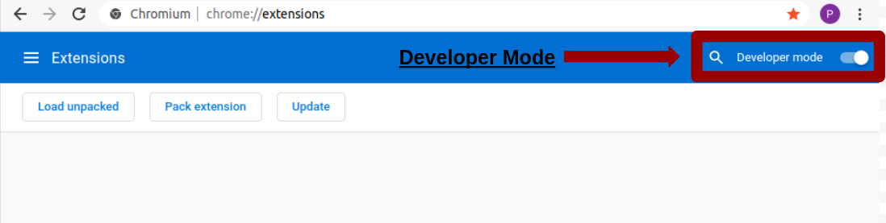

[ Instalación ]
Descarga la extensión a través del siguiente botón:
Abre Chrome o Edge y visitala url chrome://extensions/ o edge://extensions/ si utiliza Edge.
Una vez ha visitado la anterior url, habilite el modo de desarrollo (“Develope Mode”). Para habilitarlo debe de hacer click en el boton situado en la parte superior derecha del navegador, como puede apreciar en la siguiente imagen:

Localiza la extensión descargada, descomprimala y arrastre la carpeta (overprofiling) al navegador, como describimos en el siguiente gif:
Una vez haya aceptado los términos de uso, la extensión le mostrará una lista de interés asociado a sus perfiles de Facebook y Google. Por favor, seleccione como de representativos son los intereses con respecto a su comportamiento en línea. Por último, le recomendamos que haga clic en el icono de la extensión para recibir una nueva encuesta sobre sus intereses.

Si observa que se abren y cierran varias pestañas cuando visitas Facebook, no te preocupes. Desafortunadamente, es la única forma que tenemos de recopilar las explicaciones sobre por qué recibió un anuncio.